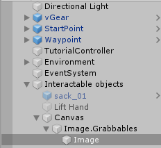
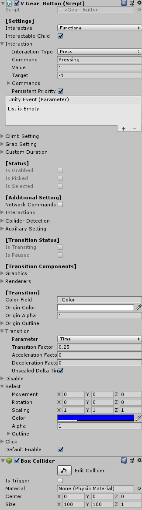
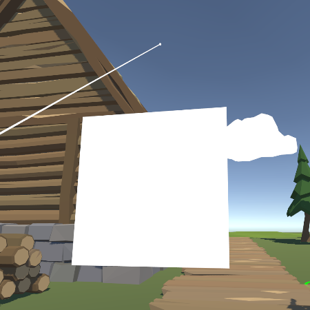
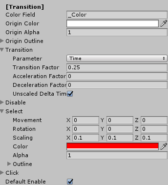
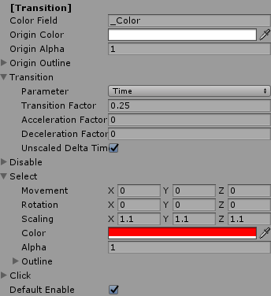
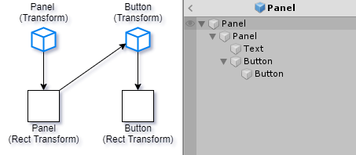
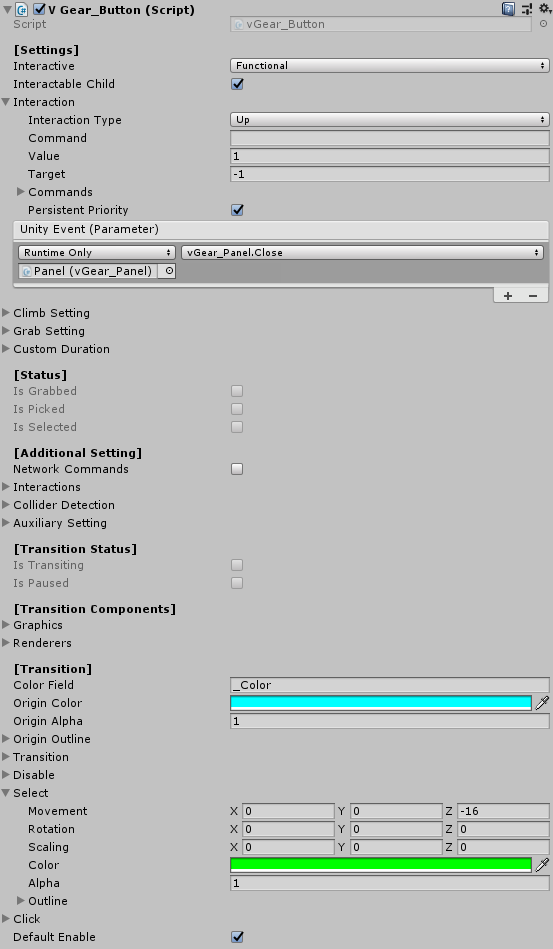
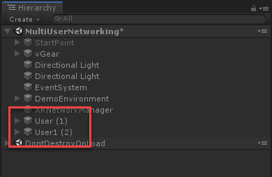

Dealing with 3D UI
This page describes using VotanicXR to interact with 3D UI.
Based on vGear Interactables, vGear have provided V Gear_Button,V Gear_Panel and V Gear_Slider, as the animatable version. Beside, vGear have provided prefabs for the 3D UI, will be introduced below.
VGear Button
VGear Button can be added into both 3D gameobjects or UI Element of Canvas, may set the transition effect into this interactable, the transition happened when transitioning, on click, on disable or on select. The sample is shown below.
Create an Image gameobject of Unity.
Set the corresponding canvas render mode into world space, and its rect transform in suitable size.

Add the vGear Button component by
vGear > Component > Button, the gameobject is wrapped and parented to{gameobject.name}.Grabbables. The parent is a gameobject for the functionality ofV Gear_Button (Script)component, and the gameobject with theCanvasandV Gear_Buttoncomponent will be the child.
There are series of transition setting after [Additional Setting]. The transition settings can only be set in editor mode. And do not forget to set the Box Collider into suitable size.

The Tranisition effect applied will be remained when event is kept.
Note that the value of Transform in UIState is adding into the Transform of the object.
The below will shown a sample of the Transition effect.
| Idle | On Select |
|  | 
|
| Editor Mode | Play Mode |
|  |  |
For the Transition Settings will be introduced below.
| Color Field | Shader color field name for materials. Should not be changed if using default material. |
| Origin Color | The original color for the UI element. |
| Origin Alpha | The original alpha for the UI element. |
| Origin Outline | An Outline structure to save the original outline setting for the UI element. |
| Origin Outline - Enable | Enable to enable the outline |
| Origin Outline - Color | The color of the outline. |
| Origin Outline - Width | The width of the outline. |
| Origin Outline - Mode | The mode of the outline. |
| Transition | Structure for frame and User transition of transformation. |
| Transition - Parameter | Transition calculation parameter. |
| Transition - Transition Factor | Transition factor value, affected by the parameter. |
| Transition - Acceleration Factor | Transition accelerating value. |
| Transition - Deceleration Factor | Transition decelerating value. |
| Transition - Unscaled Delta TIme | Enable to use unscaled delta time. |
| UIState | The state of UI elements after a transition, including a Transform, a color, an alpha and an outline structure. Can be used on disable, on select or on click. |
| Default Enable | Enable to enable the UI on start. |
VGear Panel and VGear Slider
VGear Panel is an animatable interactable with canvas to group a set of UI elements, provides transition settings and functions to react with the childs.
VGear have provided the prefab of vGear Panel will be introduced below.
The V Gear Panel (Script) component manages the display of itself and its child gameobjects, and the V Gear Slider (Script) component manages the child canvas gameobjects by the slider using triggering. Both the components are inherited from vGear_Interactable and vGear_UI.
The prefabs contain similar structrue as follow, and here take UIPanel as example.
To add the prefab into the scene, right click in hierarchy and select vGear > GameObject > UIPanel. UI Panel, has a child Rect Transform with the V Gear Slider (Script), is the template with default panel functions such as Close() when the child button is clicked.


You may create a new canvas for your UI, or customized the panel prefabs base on your need.
For the V Gear Slider (Script)component, there are [Slider] and [Scroll Content] settings, will be introduced below.
| Check Value Only | True to disable the first interaction. For example be used to content slider. False example is to be used as volume slider. |
| Inertia | The movement rate after controller release. No movement for 0, no deceleration for 1. |
| Value Range | The interaction return value range of slider.
Note that the value is inherited from VGear interactable, that can be get/set by GetValue() or SetValue() here. |
| Default Value | Sliding value of slider on start. |
| Controller Transform | Structure to calculate controller transformation
[, as a factor to map from controller input to the slider, the value of this should be the same ratio to the parent transform scale with the Max Slided Transform to synchorinize controller input]. |
| ObjectDirection | Enable to check transform change base on object direction, else base on controller direction |
| Max Slided Transform | The maximum slider transformation for the slider movement. |
| Scroll Content | The transform of scrollcontent. |
| Max Scroll Transform | The maximum scroll content transformation value from the original. |
| Sync Slider | Synchronized slider, can be used with content slider. |
